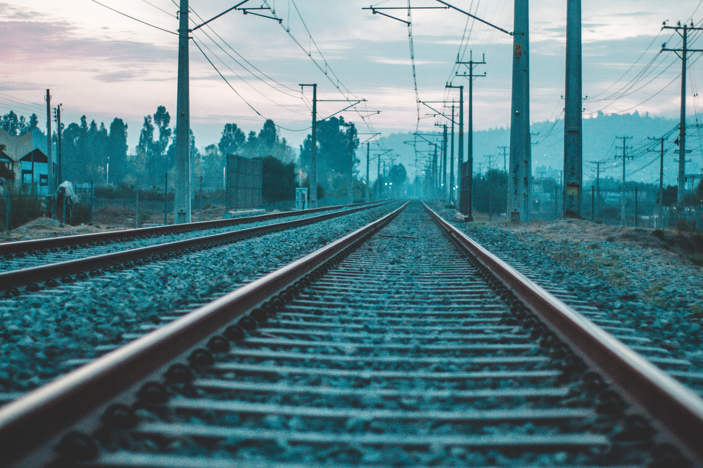

남북간 철도·도로 연결 및 현대화 착공(着工)식이 26일 북측 개성 판문역에서 열린다. 정부는 이번 착공식 소요 경비로 7억여원을 편성했다. 야당에선 "7억원을 들여 착공없는 희한한 착공식을 왜 하는지 모르겠다"는 말이 나왔다. 남측 참석자 100여명은 이날 특별열차를 타고 오전 6시 48분 서울역 11번 플랫폼을 떠나 행사장소인 북측 개성 판문역으로 출발했다.
남북은 이날 오전 10시 판문역에서 양측 주요 인사 각 100여명이 참석한 가운데 '경의선·동해선 철도·도로 연결 및 현대화 착공식'을 연다. 통일부 관계자는 "이들이 탄 열차가 오전 8시 34분쯤 군사분계선(MDL)을 통과했다"고 밝혔다. 이날 특별열차가 출발하기 직전 김현미 국토교통부 장관은 착공식 이후 철도 연결·현대화 계획과 관련 "일단 공동조사, 실태조사를 더 해봐야 한다고 하더라. 실제로 공사하기 전까지 할 게 굉장히 많다"고 말했다.
그러면서 "설계만 해도 1∼2년이 걸린다"며 "돈이 많이 드는 것이 아니니 일단 (추진할 수 있는) 상황이 될 때까지 설계 등을 열심히 해놓을 것"이라고 했다.
착공식 행사에선 북측 취주악단의 개식 공연, 김현미 국토교통부 장관과 김윤혁 북한 철도성 부상의 침목 서명식, 궤도를 연결하는 궤도 체결식, 도로표지판 제막식 등이 진행된다. 이후 남북 참석자들은 함께 기념촬영을 할 예정이다. 또 남측 참석자들은 개성공단 내 숙박시설인 송악플라자에서 따로 오찬을 한 뒤 다시 열차를 타고 오후 3시쯤 서울역으로 귀환하게 된다. 남측에서는 정부 인사로 김현미 장관과 조명균 통일부 장관, 김정렬 국토교통부 2차관 등이 참석하며 이해찬 더불어민주당 대표, 주승용 국회부의장 등이 참석한다. 자유한국당 측에서는 참석하지 않았고 정동영 민주평화당 대표도 개인 사정으로 불참한 것으로 전해졌다.